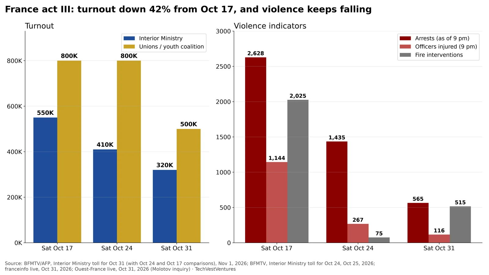

Q8. France Week 3

Official Interior Ministry tallies for the three national Saturdays of France's cost-of-living protests. Turnout fell from 550,000 (Oct 17) to 410,000 (Oct 24) to 320,000 (Oct 31, 70,000 in Paris); the ministry calls it down 22% on Oct 24 and 42% on Oct 17. The youth union coalition claimed nearly 500,000 on Oct 31 (200,000 in Paris), after 800,000 on each of the first two Saturdays. Arrests by 9 pm fell from 2,628 to 1,435 to 565 and injured officers from 1,144 to 267 to 116. Fire interventions rose again to 515 (75 on Oct 24), and shops damaged were 36, 3 of them looted (69 and 24 on Oct 24).
- Including Halloween night, the ministry counted 779 arrests for Oct 31 (214 after 9 pm, against 170 on Halloween 2025).
- Revisions: the ministry now gives Oct 24 as 1,435 arrests and 267 injured officers, up from the 1,314 and 53 first reported (and shown in R2).
- A prosecutor opened an attempted-murder inquiry after a Molotov cocktail was thrown at gendarmes in Paris on Oct 31 (Ouest-France live).
Note: Turnout counts are contested: unions count higher, the ministry lower, and neither is independently audited. Arrest counts are as of 9 pm unless stated.
Sources: BFMTV/AFP, Interior Ministry toll for Oct 31 (with Oct 24 and Oct 17 comparisons), Nov 1, 2026 BFMTV, Interior Ministry toll for Oct 24, Oct 25, 2026 franceinfo live, Oct 31, 2026 Ouest-France live, Oct 31, 2026 (Molotov inquiry)